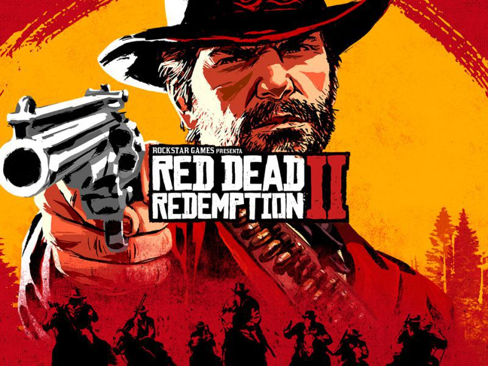
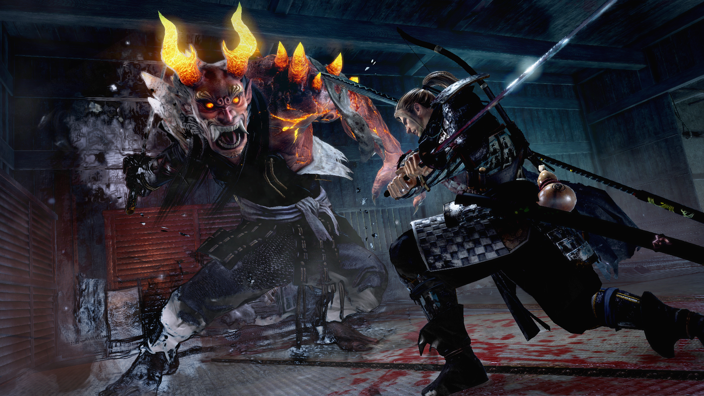
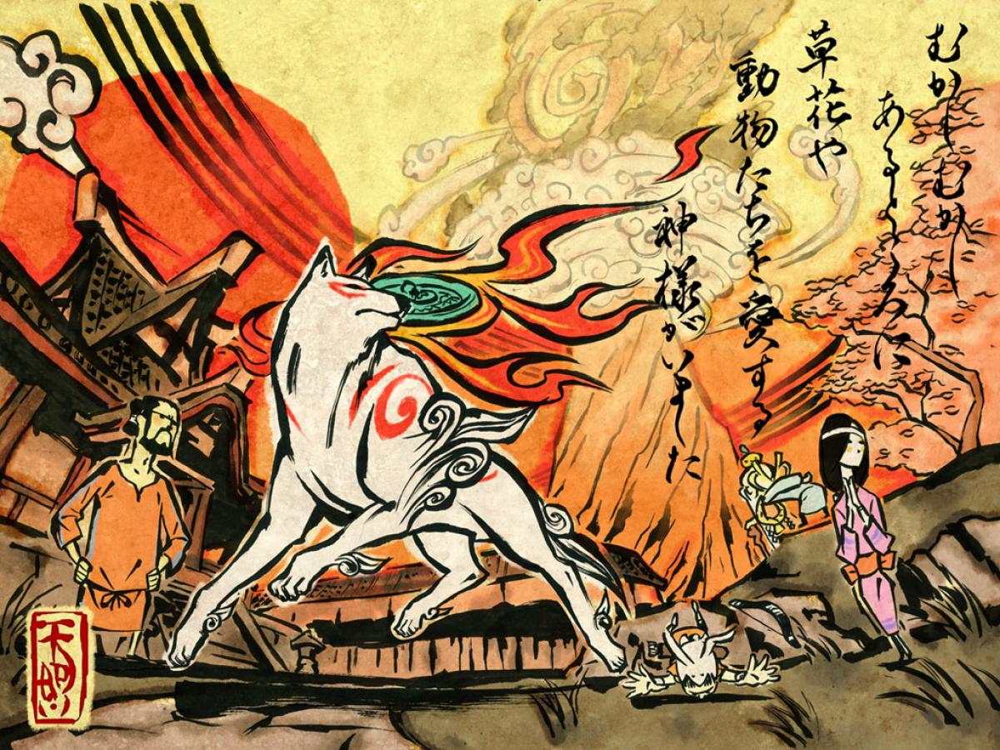

Juego de acción en el que controlas a Ryu Hayabusha, lider del clan ninja Hayabusha, que es contratado por el ministro de defensa de Japónp
para que les ayude a desmantelar una organización que esta causando estragos por todo el mundo. Cuanto más envuelto en el enemigo se va volviendo más cosas ocurren además de haberse topado con
"cierta persona" que es de vital importancia en la historia, no solo de él, si no también de más personajes que le acompañan en du aventura
Titanfall 2

En una misión en el planeta Typhon el fusilero Cooper recive de manos de un Piloto amigo suyo a su titan BT-7274 tras su muete en el campo de Batalla.
Ahora el Fusilero Cooper debe demostrar que es digno de ser Piloto y completar la misión que tenía entre manos. A lo largo de la historia estrecha lazos con BT-7274 y supera junto a él diferentes
desafios que no hubieran sido posible superar si no hubieran estado juntos y nos muestra el afecto que se puede llegar a tener por una máquina y el cariño que esta nos puede llegar a coger.
Este shooter en primera persona tan frenético también cuenta con un modo multijugador en el que te puedes medir contra otros pilotos y sus titanes alrededor del mundo
Red dead redemtion 2

Se trata de un juego de mundo abierto en el que puede ocurrite cualquier cosa mientras cabalgas por el mapa: desde que una dama te pida ayuda hasta
que te asalten unos bandidos. es un juego con unos detalles y una libertad que lo hacen lo mas realista posible en el marjen de aumentar la diversion y no hacerlo mas frustrante.
Ambientado en la america de los vaqueros, justo en el periodo en el que la industrialización y la evolución social esta aqcabando con la bandas. Nos ponemos en la piel de Arthur Morgan, mienbro
de una banda que ha tenido que huir de la ciudad de Black Water y ahora debe huir cada vez más al este para no ser capturados. A lo largo de su viaje Arthur hace todo lo posible porque
la banda siga adelante pero parece que a su lider Dutch cada vez se le ocurren ideas más disparatadas y no tienen nada que ver con lo que Dutch es en realidad.
El final de la historia, al igual de los acontecimientos que te ocurran al moverte por el mapa dependerán de tu nivel de honor, dicho de otra forma si eres una buena o mala persona mientras juegas.
Nioh

En este Japón feudal existe un material llamado "amrita" que contiene bastante poder pero que puede convertir a los humanos en yokais.
Nuestro protagonista, William, es capaz de ver y hablar con los espiritus guardianes de las personas. El suyo le fue arrebatado por un mago que busca el poder de la amrrita para hacerse mas poderosa
pero William viaja desde Inglaterra hasta Japón para detenerle y recuperar a su compañera (su espiritu guardián) junto con la ayuda de varios compañeros que conoce, los espiritus guardianes que deciden acompañarle y
también gracias a las habilidades de samurai que aprende a lo largo del camino.
A lo largo de su viaje deberá luchar contra otras personas, ya que en ese momento Japon se encuentra en periodo de guerra tras la muerte de Nobunaga Oda, y contra yokais de todo tipo, desde
simples esqueletos hasta uno creado con amrita y miles de cadaveres cuyas almas alams llenas de arepentimiento por haber muerto en combate son encerradas y debes derrotar al yokai para liberarlas
Okami

El malvado Orochi fue encerado por el guerrero de la leyenda y su compañero lobo, pero ahora a sido liberado de nuevo y el mal y la corrupcion estan
invadiendo el mundo.
El espiritu que vive en el arbol de un pueblo usa sus ultimas fuerzas para revivir al dios Amateratsu que junto con su compañero Issun buscan encontrar todas las artes de pintura
para poder así, no volver a encerrar a Orochi, si no acabar con el y con todo el mal que ha causado.